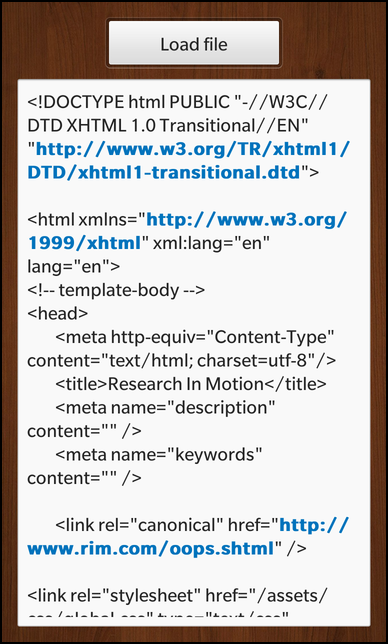

Files:
The Shared Memory example shows how to use the QSharedMemory class to implement inter-process communication using shared memory.

In this example we'll learn how to communicate between multiple processes by writing/reading data to/from a shared memory and how to synchronize the access to the shared memory segment properly.
The example application is splitted in the two executables, sharedmemory_loader and sharedmemory. With the sharedmemory_loader the user can load a file from the file system into a shared memory segment from where the sharedmemory application reads the content of the file and displays it in the UI.
The central class in sharedmemory is FileLoaderProxy, which encapsulates the loading of the data from the shared memory segment and provides a property to display the data in the UI. Whenever the user clicks on the 'Load file' button, the loadFile() slot is invoked:
onClicked: { _fileLoaderProxy.loadFile() }
To visualize the loaded data in the UI, the 'fileContent' property of the exported FileLoaderProxy object is bound against the 'text' property of a TextArea control.
text: _fileLoaderProxy.fileContent
The FileLoaderProxy class contains a member variable of type QSharedMemory which encapsulates the creation and access of the shared memory segment.
Inside the constructor of the FileLoaderProxy the segment is created and initialized
// Define the key that identifies this shared memory segment m_sharedMemory.setKey(QString::fromLatin1(s_sharedKey)); // Create the shared memory segment with the given size m_sharedMemory.create(s_memorySize);
For this the hard-coded key and size are used as defined previously in the file
// The key that is used for the shared memory segment static const char *s_sharedKey = "fileloader_shm_key"; // The size of the shared memory segment static const int s_memorySize = 10 * 1024; // 10kB
Since m_sharedMemory is a member variable, it will be deleted as soon as the FileLoaderProxy object is deleted. At this point the destructor of QSharedMemory will delete the associated shared memory segment automatically.
Whenever the user clicks the 'Load file' button, the loadFile() slot is invoked, which simply emits the change notification signal for the 'fileContent' property.
void FileLoaderProxy::loadFile() { /** * We expect that the user has started the sharedmemory_loader example and loaded * a file into the shared memory already, so just trigger to read the data from the * shared memory. */ emit fileContentChanged(); }
This signal emission will trigger the reevaluation of all property bindings where the 'fileContent' property is involved. To retrieve the new value for the 'fileContent' property, its getter method fileContent() is invoked:
QString FileLoaderProxy::fileContent() const { // Before we access the content of the shared memory we should lock it m_sharedMemory.lock(); // Read out all data const QString content = QString::fromUtf8(static_cast<char*>(m_sharedMemory.data())); // Unlock the shared memory again m_sharedMemory.unlock(); return content; }
Inside this method we try to gain the exclusive access to the shared memory segment by calling lock(). If another process holds the lock already, our process is blocked until the lock is released by the other process. When we gained the access, we read the data from the shared memory segment into a temporary variable. Afterwards we release the lock by calling unlock() and return the data.